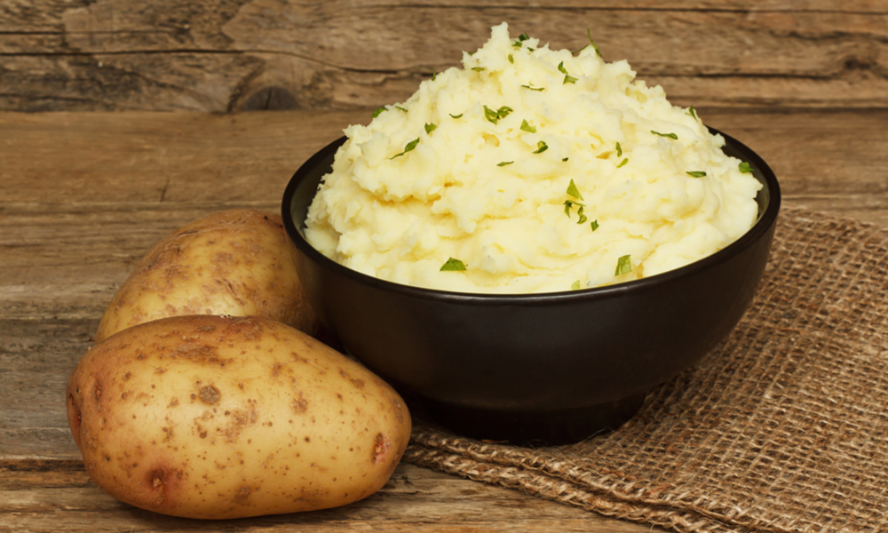

Mashed Potatoes

Beatuifully creamy mashed potatoes finsihed with a sprinkle of chive.
Ingredients
- Potatoes
- Butter
- Water(for boiling)
- Milk/Cream
- Salt & Pepper (to taste)
Steps:
- Start by peeling the potatoes, while doing this its best to begin to boil the water in a large pot
- Season the water in the pot, then add the potatoes
- Allow the potatoes to cook until they can be easily pierced with a fork
- Drain the potatoes, and add back to the pot on very low heat
- Begin to mash the potatoes, until fairly mashed
- Add the butter and mash again, before adding the milk/cream to get desired texture
- Season to taste with salt and pepper